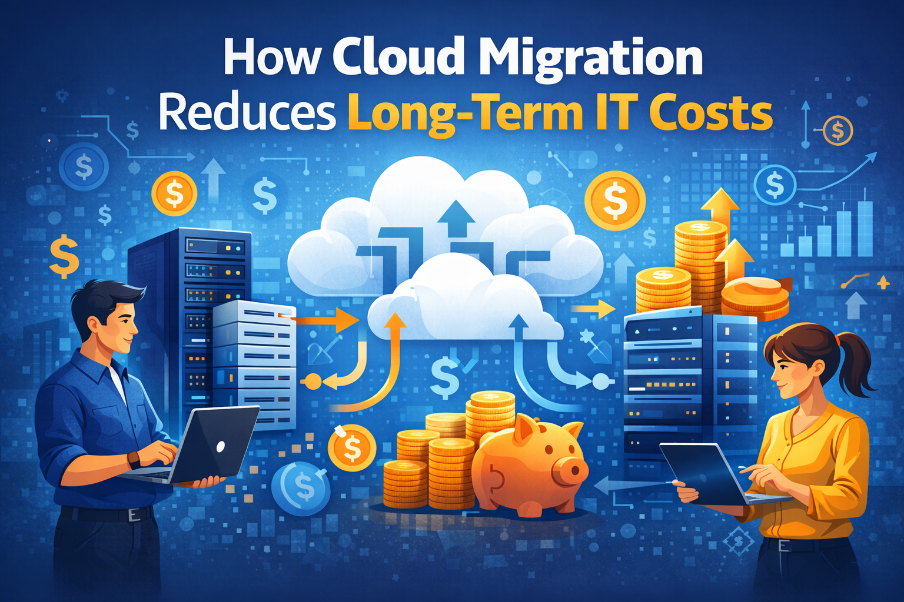

Cloud migration has become a strategic priority for many organizations seeking to modernize their IT infrastructure. By moving workloads, applications, and data from on-premise systems to cloud platforms, businesses can significantly reduce operational costs while improving scalability, reliability, and security.
Traditional IT infrastructure requires significant capital investment in servers, storage systems, networking equipment, and data center facilities. Cloud computing removes the need for purchasing and maintaining this hardware, allowing businesses to operate on a flexible pay-as-you-use model.
Maintaining on-premise systems requires ongoing support from IT teams to manage hardware failures, system updates, and infrastructure monitoring. Cloud providers handle most infrastructure management tasks, allowing internal IT teams to focus on higher-value strategic work.
Running a physical data center consumes electricity for servers, cooling systems, and network equipment. Cloud platforms operate large-scale, energy-efficient facilities, reducing the energy burden for businesses that migrate their workloads.
Cloud platforms allow businesses to scale resources instantly based on demand. Instead of purchasing hardware that may remain underutilized, companies can dynamically increase or decrease resources depending on workload requirements.
Cloud providers offer highly available infrastructure with built-in redundancy and disaster recovery capabilities. This reduces the risk of costly downtime that can impact productivity and customer trust.
Keeping on-premise systems updated requires time and resources. Cloud providers continuously maintain and update their infrastructure, ensuring security patches and performance improvements are applied automatically.
Traditional disaster recovery systems often require duplicate infrastructure and expensive backup environments. Cloud-based backup and recovery solutions are more cost-efficient and allow faster restoration of systems after incidents.
Cloud services operate on subscription or consumption-based pricing models. This allows businesses to better predict and manage IT budgets without unexpected hardware replacement costs.
With cloud infrastructure, teams can deploy applications faster, automate processes, and improve collaboration across distributed teams. This efficiency reduces operational overhead and accelerates innovation.
Cloud migration enables organizations to adopt modern technologies such as artificial intelligence, big data analytics, and automation platforms without major infrastructure investments. This creates long-term competitive advantages while maintaining cost control.
Migrating to the cloud is not just a technology upgrade; it is a strategic business decision that can dramatically reduce long-term IT costs while improving performance, reliability, and scalability. Organizations that embrace cloud infrastructure are better positioned to adapt quickly to evolving business demands and technological advancements.